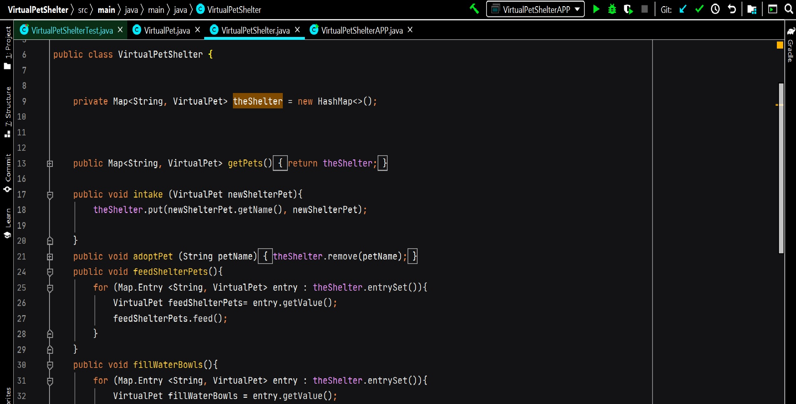
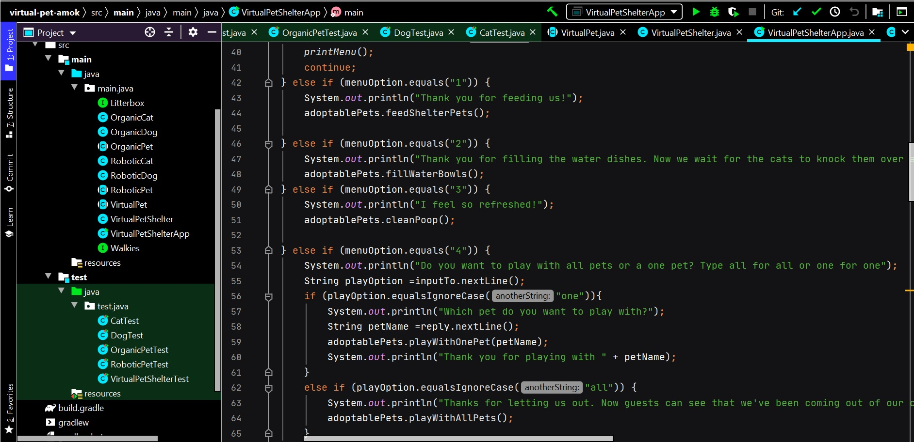

About Me

I'm Rachael Silver, a Software Developer located in Cleveland, OH. I
am currently enrolled in We Can Code IT's full-stack Software
Development Program. I come from a background in recruiting and
International Studies, where I was able to develop empathetic
approaches to every day interations and problem solving. I also run
my own small online shop selling items I create utilizing epoxy
resin. It is this amalgamation of diverse skillsets that make
development an ideal environment from me. I love being able to
utilize my creativity in every day life and working in collaborative
work spaces. Software Development allows me to leverage these
skillsets and others into successful projects. For more information,
please visit my
Github and
LinkedIn.
Virtual Pet

This is a simple project coded in Java utlizing Intellij IDEA.
Built using TDD, this project also includes a simple main class
and app class allowing for user interaction. This application is
designed to be an interactive virtual pet. It allows a user to
name their pet, select if it is a cat or a dog, and even the
color! The application then returns an image of the user's pet and
allows the user to the interact with the pet through feeding,
playing, and more.
Virtual Pet Shelter

This project is an expansion on the Virtual Pet Project. Utilizing
Java, TDD, and IntelliJ, this project incorporated new techniques
such as hashmaps, and the ability to add or remove entities given
user command. This application allows the user to act as if they
are working in a virtual pet shelter, helping animlas get adopt,
performing intakes and interacting with the animals in order to
maintain their character levels.
Virtual Pet Amok

This project is an expansion on the Virtual Pet Project. Utilizing
Java, TDD, and IntelliJ, this project incorporated new techniques
such as utilizing OOP techniques, interfaces, and abstract
classes. This application, while allowing the user to do all of
the above activities, also allowed for activities to only be
completed given a pet being Robotic, Organic, or a dog or a cat.
For example, robotic pets can only be oiled while organic pets can
be fed and given water. In addition, I utilized interfaces to
allow for specific activities for dogs and cats such as walking
the dogs and allowing cats to use a litterbox.